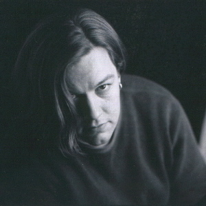

Use the buttons below to
download pdf [adobe acrobat] files of
the current draft of the manuscript. Each download is ~250k.
About the Author

Seamus Malone is a multi-media artist currently living in Oakland, CA.
Since he was introduced to the electronic dance music underground in Chicago, Seamus has
been an active participant in the New York and San Francisco Bay area rave scenes, as DJ,
musician, promoter, collective organizer and dancer.
As an expert on underground dance music culture he has been interviewed by InternetLife
magazine and appeared in the documentary film
.
Seamus recieved his MFA from the School of the Art Institute of Chicago and was the
recipient of a Whitney Museum of American Art Independent Study Fellowship in 1995.
Besides persuing his passion for writing and music, he also paints, creates conceptual
sculpture, installation, and performance art.
Information on his electronic music, upcoming live performances and
releases, as well as MP3s of his
recordings and DJ mixes are available at the
website.
Information on his visual art projects is available at
He has recently created an online digital photography project documenting
empty Silicon Valley office space, entitled Space Returns Null Value at
In addition to the novel Candyflipping, Seamus writes critical and theoretical work on
contemporary art. In the mid Ninties he was the Associate Managing Editor and New York Regional
Editor of P-Form performance art magazine. There is an archive of his writing, including
short stories, performance scripts, essays, critical reviews and poetry at
He is currently at work on a non-fiction documentary project
about the experience of urban space and the impact globalization on the emergence techno and house.